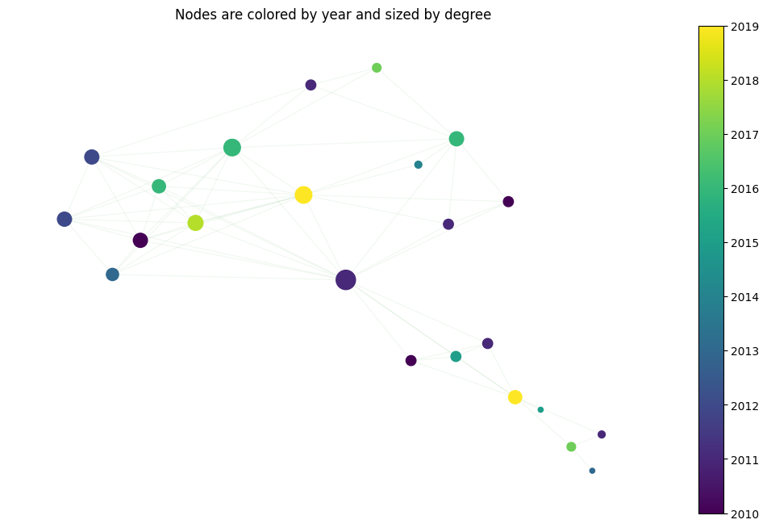
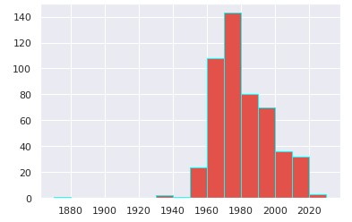
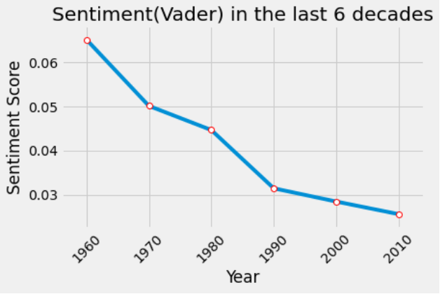
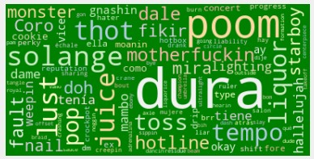

The 10's
Last decade but certainly not the least. The 2010s were a decade of massive change. Started with Obama and ended with Trump. Culturally the changes are drastical too. Before 2010, there was no Instagram, let alone TikTok. This decade brought us two royal weddings and four little prince/princesses. It saw many endings (The Oprah Show, Harry Potter, Brangelina) but even more beginnings (Girls, Frozen). Kim Kardashian broke the internet and Black Panther broke the box office.
The more connected we are, the more songs that appear. Music is way more consumed than before. Just Spotify has more than 380 million subscribers! Marketing in music industry has changed a lot too; artists do not just sing but are also influencers. Take Rihanna for example; she won the America Music award of being a music icon but also American fashion designers gave her the award of the Fashion Icon of the year. Beyonce’s show for the Superbowl was not just a 20 minute master piece, they also made a film for Netflix out of it. Music is more than just music nowadays.
As a result, we have great changes in music too. Pop comes back, in all its variants: art pop, dream pop, indie pop, electropop… just name it! The genres with the lowest centrality are now the rock related ones.
Taylor Swift makes country great again and hip hop still remains at the top thanks to Kendrick Lamar. Genres are more and more connected; the limits in genres get blurrier each time.
Although music production has increased over the last years tremendously, the number of songs that appear in the top 500 for Billboard do not have many from this decade.
Could it be that the more does not always mean the better? The sentiment analysis helps us answer this part. As we can see over the last years the artists feel less and less positive.
Lexically speaking, one remark that we can make is that numerous Spanish words appear in the Word clouds: dura, como, dale, coro... This is not surprising; what started off with Daddy Yankee and Gasolina is now Daddy singing Despacito with Justin Bieber and Con calma with Katy Perry. Completely unexpected!
So it is time to conclude. What will this new decade bring us? Has COVID made songs happier? Will lockdown start to appear in our Word Clouds? Will we have a Taylor Swift to bring New wave back again for example? Brad and Jen, Brad and Angelina or Brad and Who?? Will we change Queen B or Princess Ri?
Many questions, but hopefully many songs to answer them!